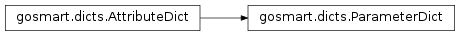

gosmart package¶
Submodules¶
gosmart.dicts module¶
-
class
gosmart.dicts.AttributeDict[source]¶ Bases:
dictBasic extension to dict allowing dot-access.
Very helpful in keeping Jinja2 files succinct.
>>> A = AttributeDict({"name": "value"}) >>> A.name value
-
class
gosmart.dicts.ParameterDict(*args, **kwargs)[source]¶ Bases:
gosmart.dicts.AttributeDictSuper-dict for Parameters.
Extends
AttributeDictwith additional Parameter-specific functionality. Allows things like (where CONSTANT_MAGIC_NUMBER is a float of value 3.0):>>> import gosmart >>> gosmart.setup(["CONSTANT_MAGIC_NUMBER"]) >>> from gosmart.dicts import ParameterDict >>> paramdict = ParameterDict({ "CONSTANT_MAGIC_NUMBER": ("float", "3") "CONSTANT_ELDRITCH_FIGURE": ("int", "3") }) >>> paramdict["CONSTANT_MAGIC_NUMBER"] 3.0 >>> paramdict.CONSTANT_MAGIC_NUMBER + 1.0 4.0 >>> paramdict["CONSTANT_ELDRITCH_FIGURE"] + 1.0 KeyError: You have asked for an undeclared parameter, [CONSTANT_ELDRITCH_FIGURE], please check your gosmart.setup(...) call.
The class itself is primarily useful internally, but the most useful user-facing aspect is that you can check your declared parameters match the parameters you use in your code with the
check_declaredoption togosmart.setup(). This should be a separate YAML file containing a list of expected parameters and will be used by the Go-Smart Clinical Domain Model to assign constraints to your numerical models (in the example, we pass a dict instead). If you use, in any parameter dictionary, a parameter not included in the master list an error will be thrown.At present, not all functionality of Goosefoot’s ParameterDict is available, but when this is incorporated, it may be possible to access the original string and typestring from the returned value. However, this would require subclassing common types. If end-users consistently duck-type (i.e. no isinstances) this may be of benefit to them, but only as an optional parameter to
gosmart.setup().In the future, this YAML file may be replaced or supplemented by AST inspection within the Go-Smart CDM.
Note that not all dictionary functionality is yet overridden.

gosmart.parameters module¶
gosmart.region module¶
-
class
gosmart.region.Region(region_dict)[source]¶ Bases:
objectRendering of CDM conceptual region.
This contains information about a CDM database-defined region. If the gosmart/goosefoot-mesher-base container has been used, volumetric meshing will be automatically performed and objects with this class will know their mesh labels within the generated MSH file.
-
classmethod
add_region_to_group(group, region)[source]¶ (Mostly internal) add a region to a given group name.
-
classmethod
add_region_to_meshed_as(meshed_as, region)[source]¶ (Mostly internal) globally register a region as surface/zone.
-
classmethod
group(group)[source]¶ Find all regions within a (CDM-defined) named group (e.g. ‘organs’, ‘tumours’).
-
classmethod
gosmart.status module¶
-
class
gosmart.status.StatusUpdater(update_socket_location=None)[source]¶ Bases:
objectPass back /short/ information to the client.
gosmart.utils module¶
Module contents¶
-
gosmart.setup(parameters, prefix=None, check_declared=False)[source]¶ Configure the Glossia Python Container Module (gosmart).
Strictly, this is optional, as it will be called when the end-user wishes to use a parameter, but if the Glossia container parameter definition files are not found it will raise RuntimeErrors.
Parameters: - parameters (dict|str|False|None) – this may either be a parameter dictionary or a string filename naming a parameter YAML file. If no parameters are to be loaded, False should be passed (this disables searching in gosmart.parameters). The None option is primarily for testing, to indicate parameters should not be loaded, but the processes should otherwise continue as normal.
- prefix (str) – location of parameter files relative to
the simulation working directory. Defaults to
gosmart._prefix. - check_declared (bool) – raise a warning if parameters are
subsequently requested that haven’t been declared in
parameters, even if they exist in the database-sourced parameter files.
Raises: RuntimeError– if parameters are requested but not found in the filesystem.